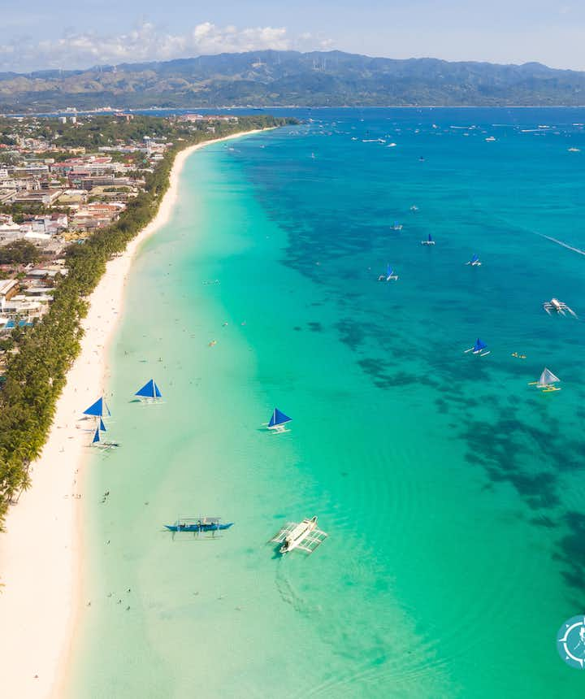

Southeast Asian island nation of the Philippines is located in the western Pacific Ocean. It is an archipelago 500 miles (800 km) off the coast of Vietnam made up of more than 7,000 islands and islets. The most populated city in the nation is Quezon City, which is close to Manila, the capital. Both are situated on the main island, Luzon, and are a part of the National Capital Region, or Metro Manila. Southeast Asia's Mindanao is the country's second-largest island. The Philippines is renowned for its rich ethnic heritage and dynamic culture. The Filipino identity, which emerged from centuries of migration, commerce, and colonization, has been influenced by many other civilizations, including Malay, Chinese, Spanish, and American cultures.
Boracay
There is a reason why Boracay Island contains more than 12 beaches, earning it the title of Philippine beach capital. For beachgoers seeking simple leisure in the sun or water sports, this little island in the west Visayas area is perfect. One of the nicest beaches in the Philippines is White Beach, which is located on the western side of the island. Shell collectors love Puka Shell Beach, which is located at the point of the island. The peaceful Cagban Beach is next to caverns that are said to still hold treasure boxes. The greatest view of the island is from a platform rock at Diniwid Beach, a little beach at White Beach's northern end.
Bohol
Situated in the middle Visayas area of the Philippines, the island of Bohol is a slower-paced resort that highlights the natural splendor of the nation. The Chocolate Hills near Carmen are among the island's most remarkable natural attractions. 1,200 geological formations make up this UNESCO-protected monument, which looks like a field of chocolate candy kisses during the dry season. A family-run refuge for the little tarsier monkey, renowned for its big, captivating eyes, is located in Bohol. You may have a private stroll around the grounds and get up close and personal with the little nocturnal creature for a modest price. The beach is Bohol's main attraction. Alona Beach is one of Panglao Island's top beaches in Bohol.

Cebu
The Philippines' top diving and snorkeling spots are said to be accessible from the island of Cebu, which is located in the central Visayas area. Cebu is among your greatest choices if you're an underwater enthusiast looking for trips that will let you to see whale sharks, coral reefs, and sea turtles up close. Sea caves in Cebu offer some of the most breathtaking views from the ocean, drawing photographers and outdoor enthusiasts searching for unusual places to dive and snorkel. Hiking and exploring the stunning Sudlon National Park, which is about an hour's drive from Cebu City, is highly recommended. Though the sea is Cebu's main attraction, history aficionados can also find museums and churches in Cebu City, a metropolitan city.